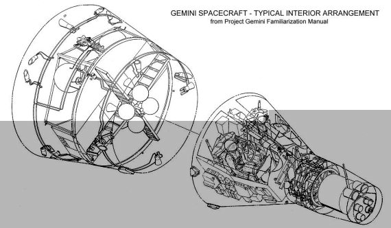
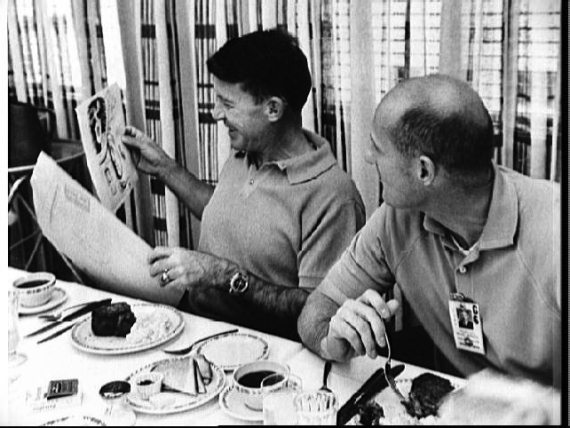

Полеты «Близнецов»
Программу «Джемини» (англ. Gemini– Близнецы) можно рассматривать и как развитие программы «Меркурий», и как предварительный этап американской лунной программы. Это некий промежуточный проект, который вобрал в себя и то, что уже было сделано, и то, что еще предстояло сделать. И не только в рамках лунной программы.
Споры о том, каким должен стать следующий американский пилотируемый корабль, начались задолго до летных испытаний «Меркурия». Победителем стал трехместный «Аполлон», которому предстояло доставить астронавтов на поверхность Луны. Но между одноместным «Меркурием», способным находиться на орбите всего сутки, и лунным кораблем лежала огромная пропасть, которую одним прыжком было не преодолеть.
Основные задачи корабля были сформулированы еще в 1959 году: четырнадцатисуточный полет, маневрирование на орбите, бортовая навигационная система, управляемый спуск и посадка на сушу. Весной 1961 года эти планы вновь стали актуальными, и к ним добавилась задача отработки сближения и стыковки двух космических аппаратов. В конце того же года компания «МакДоннелл» (McDonnell) приступила к созданию нового корабля. А 3 января 1962 года проект получил название «Джемини», которое и вошло в историю.
Первый беспилотный пуск корабля намечали на конец июля 1963 года. Второй «Джемини» с двумя астронавтами собирались запустить в сентябре на восемнадцать витков. В третьем и четвертом полетах планировалось достигнуть длительности полета четырнадцать суток. Серию из восьми полетов для отработки сближения и стыковки планировалось начать в марте 1964 года.
Но планы планами, а реальность, как всегда, оказалась иной. Недостаточное финансирование проекта, трудности в летных испытаниях ракеты-носителя «Титан-2», медленная отработка бортовых двигателей – все это привело к тому, что сроки первого полета стали отодвигаться все дальше и дальше. Первый пуск было решено перенести на 1964 год и сделать его суборбитальным.
Также пришлось отказаться от некоторых новшеств, которые первоначально были заложены в проект. Например, от параплана Рогалло, с помощью которого планировалось садиться на космодром на мысе Канаверал. В окончательном варианте «Джемини» суждено было возвращаться на Землю под парашютом с посадкой на воду. То есть точно так же, как это делали «Меркурии».
Но какими бы ни были трудности, в конце 1963 года первый корабль и первый носитель были доставлены на космодром. Несколько месяцев ушло на тестирование, сборку ракетно-космической системы, проверку наземного оборудования.
И вот, наконец, 8 апреля 1964 года в 11 часов по местному времени первый корабль «Джемини» отправился в полет. Испытание проходило в беспилотном варианте. Да и как могло быть иначе, если основной целью запуска была проверка возможностей ракеты-носителя «Титан-2» по выводу корабля на орбиту. А сам корабль упростили настолько, что даже не планировалось отделение «Джемини» от второй ступени. Макетами были заменены бортовой навигационный компьютер, инерциальный измерительный блок, система жизнеобеспечения. Вместо кресел пилотов стояли регистраторы параметров полета. Донная защита была половинной толщины: 13 мм вместо 25 мм. Двигатели ориентации вообще отсутствовали.
«Джемини-1» совершил 64 витка вокруг Земли, 12 апреля вошел в атмосферу и в ней разрушился. Но самое главное этим полетом было доказано – корабль может совершать полет по орбите.
Второй испытательный пуск был намечен на 24 августа 1964 года. Однако в срок провести его не удалось. Сначала задерживалось изготовление корабля, потом сильная гроза над космодромом повредила ракету-носитель и пришлось заменять на ней все транзисторы, затем работу наземных служб нарушил ураган Клео. Были и другие проблемы, на решение которых ушло более трех месяцев. И лишь 9 декабря была предпринята попытка запуска. Я пишу «попытка», так как старт не состоялся – автоматика выключила двигатели через одну секунду после их включения из-за поломки сервоклапана – одного из четырех приводов качания двигателей. Возникни проблема на пару-тройку секунд раньше или позже, и удалось бы переключиться на резервную систему. А так пуск пришлось отменить.

Чертеж корабля «Джемини»
Следующую попытку после проведенных доработок предприняли только 19 января 1965 года. Полетное задание включало: проверку системы отделения корабля от носителя; тестирование системы управления кораблем; отработку операций схода с орбиты, отделения от возвращаемой капсулы секции оборудования и секции тормозной двигательной установки агрегатного отсека, управляемого спуска в атмосфере; проверку средств приводнения.
«Джемини-2» был укомплектован почти полностью, за исключением катапультируемых кресел и радиолокатора. В кабине находились два манекена, имитировавшие дыхание и тепловыделение астронавтов.
Полет проходил по суборбитальной траектории и занял всего чуть более восемнадцати минут. Приводнился корабль в 3422 километрах от космодрома. Несмотря на краткость полета, все задачи были выполнены и «Джемини» получил путевку в жизнь. Или в космос, если хотите.
Испытательным стал и третий полет «Джемини». Но в нем испытывали не только технику, но и людей. Впервые на кораблях новой серии находились астронавты: Вирджил Гриссом (Virgil Ivan Grissom) и Джон Янг (John Young).
Старт «Джемини-3» состоялся 23 марта 1965 года. Полет продлился, как и планировалось, около пяти часов. Не считая мелких отказов оборудования, все прошло нормально. С помощью бортовых двигателей впервые в мире были осуществлены коррекции орбиты.
По иронии судьбы, когда Гриссом и Янг накручивали витки вокруг Земли, Москва встречала своих героев космоса – Павла Беляева и Алексея Леонова, совершивших полет на корабле «Восход-2». Тогда впервые в мире был осуществлен выход в открытый космос. Это был очередной удар по престижу американской космонавтики, так как еще за год до начала пилотируемых полетов по программе «Джемини» руководство НАСА объявило, что первым в открытом космосе будет гражданин США и случится это во время полета «Джемини-4». Но в очередной раз советским конструкторам удалось опередить американцев.
Любопытно, что первоначальные планы НАСА предусматривали совершение так называемого «выхода со вставанием». Этот термин используется в американской космонавтике и означает, что после открытия люка астронавт высовывается из кабины, встав на кресло. В нашей стране такой способ работы в открытом космосе многие годы за выход и не считался. Да и сами американцы понимали, что это лишь подготовительный вариант. Поэтому, посмотрев на экране, как Алексей Леонов парит над нашей планетой, в НАСА решили скорректировать свои планы и готовить астронавтов к полноценному выходу.
«Джемини-4» стартовал 3 июня 1965 года и стал первым американским кораблем, полетом которого управляли не с мыса Канаверал, а из Центра пилотируемых полетов в Хьюстоне. Командиром корабля был Джеймс МакДивитт (James Alton McDivitt), а пилотом, которому предстояло покинуть борт корабля, – Эдвард Уайт (Edward Higgins White).
Первой операцией, которую экипаж попытался осуществить в космосе, стало сближение со второй ступенью ракеты-носителя «Титан-2». Но пока МакДивитт разворачивал корабль и прицеливался, ступень стала быстро опережать «Джемини-4». Командир попытался догнать ее, сближаясь «по-земному». Но хитрые законы небесной механики не позволили это сделать, и в итоге МакДивитт был вынужден отказаться от попыток. На «погоню» ушло 62 килограмма топлива, почти половина всего запаса.
Выход в открытый космос планировался в конце второго витка, когда корабль должен был пролетать над территорией США. Но попытки сближения со ступенью «Титана» сорвали график подготовки, и было решено отложить выход на полтора часа. И вот, наконец, Уайту разрешили покинуть кабину. Он закрепил фал, открыл люк и шагнул в просторы Вселенной.
В отличие от Алексея Леонова, который выходил в космос через шлюзовую камеру, Уайт покидал «Джемини-4» прямо из кабины. Было еще одно отличие. Во время работы вне корабля Уайт использовал ручное реактивное устройство маневрирования. Его создали в Хьюстоне инженеры группы Гарольда Джонсона (Harald Johnson). Установка пистолетного типа имела массу 3,4 килограмма и могла сообщить астронавту скорость до 1,8 метра в секунду. В рукоятку устройства была вмонтирована фотокамера для съемки Земли, звезд и корабля.
Пробыв в открытом космосе 20 минут, Эдвард Уайт вернулся в кабину. Обращаясь к своему командиру, он сказал: «Это самый печальный момент в моей жизни», имея в виду свое возвращение на корабль. Но все печали пришлось тут же забыть, потому что МакДивитту, не удавалось закрыть за Уайтом люк. А полет с открытым люком означал только одно – смерть. Астронавты вдвоем вцепились за скобу и, промучившись почти 20 минут, все-таки справились с этой проблемой. На Земле о событиях на орбите узнали только через два часа. Уже потом поняли, что в вакууме сварились витки пружины люка.
Однако главной задачей полета «Джемини-4» был не выход в открытый космос, а четырехдневные испытания всех систем корабля в условиях реального полета. Для американцев это было чрезвычайно важное мероприятие, так как до того момента только один полет продолжался более суток. Во всех остальных астронавтам удавалось «насладиться» прелестями невесомости лишь несколько часов.
В программу полета входили также одиннадцать экспериментов, в том числе два по заданию Пентагона – измерения протонной и электронной составляющих космической радиации и навигационные измерения с помощью ручного секстанта. Большое место в полетном задании было отведено наблюдениям за земной поверхностью.
На двадцатом витке астронавты наблюдали спутник цилиндрической формы с торчащим с одной стороны выступом. Мак-Дивитт сфотографировал его несколько раз, но опознать объект по фотографиям не удалось. Еще два спутника командир видел на большом расстоянии.
Полет «Джемини-4» завершился 7 июня приводнением в Атлантическом океане. Астронавты провели в космосе 4 суток 1 час 56 минут 12 секунд.
Следующий полет по программе «Джемини» должен был стать на тот момент самым продолжительным в истории космонавтики – восемь суток. Второй пилот Чарльз Конрад (Charles Conrad) даже предложил включить в эмблему полета лозунг: «Восемь дней или провал». Фразу посчитали излишне честолюбивой и текст не утвердили. Хотя он очень точно отражал суть события.
Первая попытка старта «Джемини-5» была предпринята 19 августа 1965 года, но помешала погода – от удара молнии произошел скачок напряжения на главной линии электропитания стартового комплекса. Никто не мог гарантировать, что не пострадала информация в памяти бортового вычислительного комплекса, а на проверку времени уже не оставалось. Поэтому было решено старт отложить.
Пуск состоялся 21 августа и прошел успешно. На борту корабля находились командир Гордон Купер (Leroy Gordon Cooper) и второй пилот Чарльз Конрад.
Главными задачами первого полетного дня должны были стать испытания радиолокатора и сближение со спутником REP, имитирующим встречу со ступенью «Аджена-D». Однако только первая коррекция прошла успешно. А потом начались неприятности. Когда Конрад попытался провести следующую коррекцию, обнаружилось падение давления кислорода, поступающего из бака на регулятор. Нагреватель бака не работал. Пилот попытался включить его вручную, но не смог. В этой ситуации решили поспешить с началом испытаний радиолокатора, и через 2 часа 31 минуту после старта Купер отстрелил в боковом направлении спутник-мишень REP. В течение трех следующих витков «Джемини-5» должен был уйти на 80 километров, а затем вновь сблизиться с субспутником.
Слежение за новым искусственным объектом проходило нормально. Но давление в баке с кислородом продолжало падать. В результате сблизиться с REP так и не удалось. Субспутник в течение восьми часов оставался поблизости от корабля, после чего разрядились его бортовые батареи, погасли световые маяки и астронавты потеряли его из виду.
А тем временем давление кислорода продолжало падать и достигло значения 6,7 атмосферы вместо положенных 60 атмосфер. Началась подготовка к аварийному завершению полета на шестом витке. Это пришлось бы сделать, если бы давление упало до 1,6 атмосферы. Суда поисковой службы уже шли в район предполагаемой посадки, когда давление стабилизировалось на отметке 4,6 атмосферы, что позволяло продлить полет до 18 витков. А на следующие сутки давление начало медленно расти, и вопрос об аварийной посадке был снят с повестки дня.
Дальнейший полет проходил, в основном, согласно программе. Можно отметить два важных события последующих дней.
24 и 25 августа экипаж наблюдал запуски межконтинентальных баллистических ракет «Минитмен-1» (Minuteman) с авиабазы Ванденберг в Калифорнии, а также факел двигателя на огневых испытаниях на авиабазе Холломан. Аналогичные эксперименты в нашей стране состоялись лишь в октябре 1969 года во время полета корабля «Союз-6».
А 25 августа вышел из строя двигатель ориентации № 7. На следующий день был потерян и двигатель № 8. В последующие дни отказали еще четыре двигателя. В результате пришлось лечь в дрейф и отменить все эксперименты, требующие ориентации корабля.
И все-таки свои восемь суток «Джемини-5» отлетал. Полет был сокращен лишь на один виток, да и то из-за того, что в основной район посадки пришел ураган Бетси, и приземляться пришлось в запасном районе.
Дальнейшие планы НАСА предусматривали проведение в 1965 году еще двух полетов: «Джемини-6» в октябре с первой стыковкой со ступенью «Аджена-D» и «Джемини-7» в декабре на длительность в 14 суток. Уже были названы составы экипажей. Подготовка велась по графику и не предвещала никаких осложнений. Но, как всегда, вмешался случай, который сломал все предварительные планы.
Старт «Джемини-6» был запланирован на 25 октября. Заправленная топливом ракета уже стола на площадке, начался предстартовый отсчет, астронавты Уолтер Ширра (Walter Marty Schirra) и Томас Стаффорд (Thomas Stafford) заняли свои места в кабине корабля. За 1 час 40 минут до пуска ракеты-носителя «Титан-2» с космодрома на мысе Канаверал состоялся еще один пуск – стартовала ракета «Атлас». Ей предстояло вывести на орбиту ступень «Аджена-D», с которой должен был состыковаться космический корабль. Выведение на промежуточную орбиту прошло успешно. Довыведение предстояло осуществить с помощью собственных двигателей «Аджены-D». Через 367 секунд после старта двигатель ступени был включен, но спустя девять секунд прекратилось поступление телеметрической информации с борта. На радиолокаторе появилось пять отдельных целей, что означало взрыв ступени. Стало ясно, что стыковаться «Джемини-6» не с чем, и старт пришлось отменить.
Эмблема корабля «Джемини-3»
Возникшие трудности озадачили специалистов НАСА. Было не совсем понятно, что делать дальше. Ну, хорошо, «Джемини-7» отлетает свои 14 суток. А потом? Спасительная идея пришла в голову вице-президенту компании «МакДонелл» Уолтеру Берку (Walter Burke). Он предложил использовать один «Джемини» как мишень для другого «Джемини». Присутствовавшие при разговоре члены экипажа «Джемини-7» Фрэнк Борман (Frank Borman) и Джеймс Ловелл (James Lovell) согласились немедленно. Но две другие идеи Берка Борман отверг, так как они могли помешать четырнадцатисуточной экспедиции на орбиту. Во-первых, установку стыковочного модуля на борту своего корабля. Поэтому корабли могли только сблизиться, но не состыковаться. Во-вторых, пересадку пилотов Ловелла и Стаффорда через открытый космос.
Но убедить руководство НАСА в том, что можно осуществить запуск двух кораблей с интервалом в несколько дней и управлять одновременно их полетом, оказалось нелегко. Помог опыт советских коллег, которые проводили такие операции в августе 1962 года и в июне 1963 года. Высказанный аргумент: «Если русские могут, то и мы можем попробовать», – оказался решающим. В США началась подготовка к групповому полету.
Первым ушел в космос корабль «Джемини-7» с астронавтами Фрэнком Борманом и Джеймсом Ловеллом на борту. Произошло это 4 декабря 1965 года. Главной их задачей являлся длительный полет, по продолжительности сравнимый с полноценной лунной экспедицией. Астронавты должны были доказать, что столь длительное пребывание в космосе не представляет опасности для человека.
В полетное задание были вписаны двадцать экспериментов, главным образом медицинских. Их выполнением Борман и Ловелл занимались первые десять суток своего полета. Особых осложнений не возникло, хотя вновь, как и в полете «Джемини-5», падало давление в баке с кислородом, и отказали несколько двигателей ориентации. Были и другие поломки, но большого влияния на программу они не оказали.
12 декабря была предпринята попытка запустить «Джемини-6» с Уолтером Ширрой и Томасом Стаффордом на борту. В расчетное время двигатели «Титана-2» были включены, но уже через 1,7 секунды отключились из-за преждевременного отделения электроразъема перемычки. Вообще-то в подобной ситуации астронавтам следовало катапультироваться из кабины. Кто знает, что может произойти дальше. А вдруг последует взрыв носителя? Но Ширре потребовались доли секунды, чтобы понять, что ракета не летит, не падает, но и не взорвется. Астронавты не стали катапультироваться и остались в кабине.
Принятое Ширрой и Стаффордом решение позволило уже через трое суток повторить попытку запуска, которая на этот раз закончилась успехом. 15 декабря «Джемини-6» наконец-то вышел на орбиту. Через шесть часов после старта в результате маневрирования два пилотируемых корабля сблизились до нескольких десятков метров (после выхода «Джемини-6» на орбиту их разделяли 2000 километров) и начался совместный полет. Он продолжался 3,5 витка вокруг Земли. Были моменты, когда корабли разделяли всего 25–30 сантиметров!
Полет «Джемини-6» не планировался длительным. Поэтому уже через сутки, полностью выполнив свою программу, астронавты возвратились на Землю. «Джемини-7» находился в космосе еще двое суток, после чего успешно приводнился в Атлантике. Своим полетом Борман и Ловелл доказали, что человек может длительное время жить и работать в космосе.
Прежде чем рассказать о следующем полете «Джемини», необходимо упомянуть о трагическом событии, оказавшем влияние на ход программы. Пусть это влияние не было кардинальным, но кое-какие коррективы в график полета оно внесло. 8 ноября 1965 года были объявлены составы экипажей корабля «Джемини-9», полет которого был запланирован на середину мая 1966 года. «Основными» были Эллиотт Си (Elliott See) и Чарльз Бассетт (Charles Bassett), а их дублерами – Томас Стаффорд и Юджин Сернан (Eugene Cernan). Подготовка шла тяжело.
28 февраля 1966 года экипажи «Джемини-9» на двух самолетах Т-38 вылетели из Хьюстона в Сент-Луис, где им предстояло в течение двух недель заниматься на стыковочных тренажерах. В сложных погодных условиях Эллиотт Си ошибся при заходе на посадку, а при попытке уйти на второй круг ниже кромки облачности потерял скорость и зацепил крылом крышу одного из заводских зданий компании «МакДоннелл». Это был как раз 101-й корпус, где стояли на испытаниях «Джемини-9» и «Джемини-10». Самолет подскочил, упал в соседний двор и взорвался. Астронавты Эллиотт Си и Чарльз Бассетт погибли. Через три дня их похоронили на Арлингтонском кладбище. Стаффорд и Сернан продолжили подготовку уже как члены основного экипажа. Им «на подмогу» были направлены Джеймс Ловелл и Эдвин Олдрин (Edwin Eugene Aldrin).
А тем временем 16 марта 1966 года на орбиту отправился корабль «Джемини-8» с астронавтами Нейлом Армстронгом (Neil Armstrong) и Дэвидом Скоттом (David Scott) на борту. Им предстояло осуществить то, что не удалось в октябре предыдущего года – состыковать свой корабль со ступенью «Аджена-D». Полет был рассчитан на трое суток. За 1 час 41 минуту до старта «Джемини-8» с мыса Канаверал был запущен «Атлас», который вывел в космос ступень «Аджена-D». В этот раз все прошло успешно, и старт пилотируемого корабля отменять не пришлось. Стыковка двух космических аппаратов была запланирована на четвертом витке. В 23 часа 14 минут 54 секунды по Гринвичу Нейл Армстронг уверенно состыковал «Джемини-8» с мишенью. Это была первая в истории космонавтики стыковка.
На следующий день планировался не менее важный эксперимент – выход Дэвида Скотта в открытый космос на 2 часа 51 минуту. При этом предполагалось расстыковать объекты и развести их на 18 метров. После этого Скотт должен был с помощью ручного реактивного устройства «перелететь» на ракету, а Армстронгу предстояло подвести корабль поближе и сымитировать спасение терпящего бедствие астронавта. Для страховки во время «перелета» на ракету Скотт должен был быть соединен со своим кораблем фалом длиной более 30 метров.
Были в программе и другие важные и интересные эксперименты. В реальности ничего осуществить не удалось. Проблемы начались через 30 минут после успешной стыковки. Армстронг развернул связку «корабль-мишень» на 90 градусов, но она неожиданно стала заваливаться набок. Командир остановил движение, но оно тут же возобновилось. Связка начала кувыркаться в космосе. А потом начались самопроизвольные включения-выключения двигателя. Попытки взять движок под контроль успехом не увенчались.
Армстронг боялся, что не выдержит стыковочный узел, поэтому решил немедленно расстыковать корабли. Лишь потом астронавты поняли, что именно в этом была их ошибка, которая едва не стоила им жизни. Когда Скотт расстыковал аппараты, Армстронг выдал кораблю импульс носовыми двигателями – подальше от опасного соседа. Но избавившись от дополнительного груза, «Джемини-8» завертелся с бешеной скоростью.
Опытному летчику Нейлу Армстронгу все-таки удалось остановить эту «пляску смерти», израсходовав при этом почти все топливо. Не оставалось ничего другого, как идти на посадку. Корабль приводнился в запасном районе, в Тихом океане, всего через 10 часов 41 минуту после старта.
Разбор полета «Джемини-8» не повлиял на дату следующего старта – «Джемини-9» должен был отправиться в космос по плану, в середине мая. Как я уже писал, за три месяца до этого в состав основного экипажа вошли Томас Стаффорд и Юджин Сернан, которым пришлось заменить погибших в авиакатастрофе Эллиотта Си и Чарльза Бассетта.
Новый полет также не обошелся без проблем. Их началом стала отмена старта 17 мая. Запущенная чуть ранее в тот день ракета-мишень «Аджена-D» вышла на орбиту с такой высотой, до которой «Джемини-9» было не добраться. Поэтому Стаффорда и Сернана в тот день «вынули» из кабины корабля. Следующая ракета могла быть готова только через два месяца. Но в НАСА решили не ждать и запустить другую мишень – ATDA. Это позволяло не отменять очередную миссию «Джемини». Новой датой старта было назначено 1 июня.
Запуск ATDA состоялся по плану. Но после выхода мишени на орбиту выяснилось, что головной обтекатель не отделился, а лишь частично раскрылся. Корабль с астронавтами, тем не менее, решили запускать. Так как пусковое окно к моменту принятия решения уже закрылось, старт отложили на двое суток.
И вот 3 июня астронавты прибыли на космодром. Для Томаса Стаффорда это была уже четвертая попытка улететь в космос. В свой первый полет на «Джемини-6» он также отправился только со второго раза. Когда Стаффорд и Сернан прибыли на космодром, их встретил шутливый плакат, подготовленный дублерами Ловеллом и Олдрином: «Уберитесь, наконец, в космос или освободите место!». Астронавты вняли совету и полет начался.
Через 4 часа после старта они приблизились к мишени на 30 метров. Осмотр со стороны подтвердил самые худшие опасения – головной обтекатель был на месте, и стыковать аппараты было невозможно. Стаффорд слегка толкнул обтекатель носом своего корабля, но «спихнуть» его не удалось. Предложение о выходе Сернана в космос для решения проблемы на Земле отвергли. Из девяти стыковок, которые были запланированы на полет, не удалось осуществить ни одной.
Весь остальной полет «Джемини-9» проходил нормально. Астронавты еще несколько раз сближались с ATDA, отрабатывая различные режимы маневрирования.
5 июня начался не менее важный эксперимент – выход в открытый космос. Его выполнил второй пилот Юджин Сернан. Впервые для работы в открытом космосе было применено «летающее кресло» – установка AMU. Правда, астронавт не рискнул выполнить все маневры, которые запланировали на Земле – запотевало стекло на шлеме. Но и того, что удалось, было достаточно для имитации спасения астронавта в космосе.
6 июня корабль благополучно приводнился в Атлантическом океане.
Несмотря на задержку полета «Джемини-9», следующий корабль стартовал точно в срок – 18 июля. На его борту находились Джон Янг и Майкл Коллинз (Michael Collins). Я не буду подробно описывать ход полета «Джемини-10», скажу только, что в истории американской космонавтики он считается одним из самых успешных.
Астронавтам удалось в первые сутки полета состыковаться со ступенью «Аджена-D» № 5005, запущенной незадолго до старта корабля. Затем с помощью двигательной установки ступени высота орбиты корабля была поднята до 766 километров в апогее. Эту операцию предприняли, чтобы сблизиться с новой целью – ступенью «Аджена-D» № 5003, с которой так неудачно в марте 1966 года состыковался «Джемини-8».
На вторые сутки полета Майкл Коллинз вышел в открытый космос, высунувшись из люка. Это был «выход со вставанием». О сущности термина я уже писал, рассказывая о «Джемини-4». Астронавт провел фотографирование Млечного Пути, но не смог сфотографировать Землю – из-за горизонта встало Солнце, Янг и Коллинз почувствовали раздражение глаз и срочно закрыли люк.

Члены экипажа корабля «Джемини-6» Томас Стаффорд и Уолтер Ширра. Завтрак перед стартом
В третий полетный день корабль расстыковался с «Адженой-D» № 5005 и начал сближение с «Адженой-D» № 5003. Янг остановил «Джемини-10» всего в трех метрах от мертвой ступени – топливо на ней закончилось еще в марте, газы были стравлены. Вскоре начался второй выход Коллинза в открытый космос. Первым делом он снял ловушку для микрометеоритов со своего корабля, а потом совершил то, что позже назовут «цирком на орбите». Коллинз оттолкнулся от «Джемини-10» и за несколько секунд перелетел на ступень «Аджена-D», где уцепился за стыковочный конус.
Коллинзу предстояло снять со ступени ценный груз – ловушку S-10, в которой находились образцы культур бактерий и вирусов. Они летали уже четыре месяца, и ученых интересовало, как образцы перенесли воздействие космоса. Двигаясь по корпусу ступени, Коллинз сорвался – зацепиться было не за что. Астронавт вернулся к «Джемини-10» и повторил прыжок. На этот раз он зацепился удачнее и смог выполнить операцию. Свежую ловушку Майкл не установил – побоялся порвать скафандр.
На следующий день «Джемини-10» приводнился в Атлантике в 875 километрах восточнее мыса Канаверал.
Программа полета «Джемини-11» не сильно отличалась от предыдущих полетов. Те же сближение и стыковка с мишенью, те же выходы в открытый космос. Оригинальным было то, что астронавтам предстояло провести сверхскоростное сближение с мишенью – всего за один виток, причем исключительно по бортовым данным. Был такой вариант баллистического взлета с Луны, и его предстояло отработать.
12 сентября с разницей в 1 час 37 минут с мыса Канаверал стартовали сначала мишень «Аджена-D», а потом корабль «Джемини-11» с астронавтами Чарльзом Конрадом и Ричардом Гордоном (Richard Gordon) на борту. Стыковка аппаратов состоялась через 94 минуты после старта. После этого астронавтам разрешили впервые выполнить тренировочные стыковки. Конрад и Гордон по два раза стыковались с мишенью – по одному разу на свету и по одному разу в тени.
На следующий день Гордон вышел в открытый космос и соединил корабль и мишень тросом длиной 30 метров. Другие эксперименты во время выхода осуществить не удалось – астронавт затратил на работу вне корабля слишком много усилий, и командир приказал ему срочно возвращаться в кабину.
14 сентября с помощью двигательной установки «Аджена-D» связка была поднята на высоту 1370 километров. Это максимальная высота, которую достигали пилотируемые корабли на околоземной орбите. Рекорд побили только «Аполлоны», летевшие к Луне. Но они находились на межпланетной трассе, а не на околоземной орбите.
15 сентября состоялся очень интересный эксперимент. Основную роль в нем играл трос, которым двумя днями ранее соединили корабль и мишень. Конрад расстыковал космические аппараты и развел их на некоторое расстояние. Сначала он попытался ввести связку в гравитационную стабилизацию. Однако отойти на 30 метров, не возбудив колебаний, не удалось и поэтому сразу перешли ко второй части эксперимента – «искусственной тяжести». Конрад ввел связку во вращение и довел ее скорость сначала до 38 оборотов в минуту, а потом до 55. Это создавало искусственную гравитацию величиной 0,00078 единицы. Человеческий организм ее не чувствовал, но приборы фиксировали. Да и вещи, свободно летавшие по кабине, постепенно «потянулись» вниз. После трех часов полета штырь с тросом был отстрелян и корабль ушел от ракеты. В тот же день он приводнился в Атлантическом океане.
И наконец, полет «Джемини-12» состоялся в ноябре 1966 года. На его борту находились Джеймс Ловелл и Эдвин Олдрин. В программу полета были включены, в основном, те же элементы полетного задания, что и для двух предыдущих миссий. Что-то астронавтам сделать удалось, что-то нет. Например, при закрутке связки «корабль-мишень» трос так и не натянулся. Зато во время пребывания в открытом космосе Олдрин смог выполнить все запланированные операции, не перенапрягаясь, и строго по графику. 15 ноября капсула «Джемини-12» приводнилась в Атлантическом океане.
На этом пилотируемые полеты на кораблях серии «Джемини» были завершены.
Как я уже сказал, «Джемини» являлась промежуточным этапом между программами «Меркурий» и «Аполлон». При определенном стечении обстоятельств она могла бы стать и «лунным вариантом». Вероятнее всего, американцы воспользовались бы проектом лунного корабля серии «Джемини», если бы не сложилось с «Аполлоном». По крайней мере, такие планы существовали.
В первой половине 1960-х годов было разработано несколько вариантов лунных экспедиций с использованием кораблей серии «Джемини». Причем они имели очевидное преимущество перед программой «Аполлон» – возвращаемые капсулы были меньше и легче (3,2 против 14,7 тонны у «Аполлона»). К Луне их можно было запустить отработанной ракетой-носителем «Титан-3», а не «Сатурном-5», который еще предстояло довести до ума.
Самые первые наброски лунной программы «Джемини» были сделаны летом 1961 года Джеймсом Чемберленом (James Chamberlain) из НАСА. Его план состоял в следующем. Первый беспилотный пуск «Джемини-1» должен был состояться в марте 1963 года (фактически был осуществлен на год позже). Затем должна последовать серия пилотируемых полетов, в ходе которых продолжительность пребывания астронавтов в космосе требовалось увеличить до семи суток. Также было необходимо отработать методику стыковок со ступенью «Аджена-D». В ноябре 1964 года «Джемини-11» должен был осуществить на высокой орбите пробную стыковку со ступенью «Кентавр» (Centaur). Затем, в марте 1965 года, «Джемини-13» с двумя астронавтами на борту состыковался бы с «разгонником» и совершил пилотируемый облет Луны.
Предложенный Чемберленом вариант был гораздо дешевле аналогичного этапа программы «Аполлон». По расчетам, стоимость всей программы «Джемини» увеличилась бы всего на 60 миллионов долларов, но зато при этом многократно возрастала бы практическая отдача.
Любопытно, что в первоначальном виде проект Чемберлена предполагал всего девять пусков для достижения своей дерзкой цели. При этом пилотируемый облет Луны планировался уже на май 1964 года. При этом программа подорожала бы всего на 8,5 миллиона долларов. Однако уже через неделю Чемберлен «одумался» и предложил НАСА более реалистичный план. Но и он «не прошел». В НАСА никто не собирался менять утвержденную программу ради «сумасбродной идеи».
Но Чемберлен не расстался со своей идеей и предложил новый, еще более честолюбивый план. На этот раз он предложил не только облететь Луну на «Джемини», но совершить мягкую посадку. При этом его программа должна была обойтись в 20 раз дешевле «Аполлона». Изюминка состояла в том, что должен был использоваться посадочный модуль открытого типа – астронавт в скафандре фактически сидел на баке с топливом. Вес такой лунной кабины составил бы всего 4,4 тонны, а полная масса выводимого на траекторию полета к Луне корабля не превысила бы 13 тонн. В качестве разгонного блока Чемберлен планировал использовать ракету-носитель «Сатурн С-3».
При этом график полетов претерпевал существенные изменения, но автор идеи был уверен, что посадочный модуль «Джемини-16», управляемый одним астронавтом, сможет прилуниться уже в январе 1966 года. Для реализации всей программы требовалось 16 ракет «Титан-2» и две ракеты «Сатурн С-3».
Несмотря на поддержку некоторых крупных аэрокосмических компаний, руководство НАСА предпочло не заметить инициативу своего инженера и отвергло все его проекты. Но Чемберлен не сдавался и продолжал совершенствовать вариант открытого модуля. В конце его изысканий этот аппарат должен был весить всего 1800 килограммов. Но лишь когда Чемберлен выбросил из своего плана лунные рейсы, программа получила одобрение и приобрела тот «околоземной» вид, который и был осуществлен в 1965–1966 годах.
Еще один проект лунного использования был сформулирован в сентябре 1962 года. Это был вариант использования «Джемини» в качестве спасательной шлюпки, если бы что-то случилось с «Аполлоном». Но дальше эскизного проектирования дело не пошло.
Несмотря на то, что все варианты лунного использования кораблей «Джемини» отметались как несостоятельные, мысль конструкторов не удавалось остановить. В 1965 году очередной проект был выдвинут астронавтом Чарльзом Конрадом и инженерами компаний «Мартин» и «МакДонелл». «Нарушители спокойствия» даже смогли организовать в Хьюстоне конференцию для обсуждения своего проекта. Они предлагали в начале 1967 года, сразу после окончания полетов «Джемини» по околоземной орбите, провести облет Луны. Общая стоимость проекта оценивалась в 350 миллионов долларов. Но и здесь реакция НАСА была резко отрицательной.
В последний раз идея лунного использования «Джемини» была озвучена после пожара на мысе Канаверал, который серьезно осложнил реализацию программы «Аполлон». В те трагичные дни компания «МакДонелл» предложила вернуться к концепции спасательного корабля на основе «Джемини». Теперь рассматривались три варианта.
Первая система – «Аппарат спасения с лунной орбиты» – могла бы спасти экипаж «Аполлона», оказавшийся в плену лунной орбиты. При этом «Джемини» отправлялся к Луне в беспилотном варианте. После выхода на селеноцентрическую орбиту он должен был автоматически сблизиться с терпящим бедствие «Аполлоном», состыковаться с ним и принять на свой борт астронавтов для возвращения на Землю.
Вторая система – «Аппарат защиты и жизнеобеспечения на лунной поверхности» – являлась по сути дела облегченным вариантом обитаемой лунной станции. В случае, если бы возвращаемый модуль «Аполлона» не смог взлететь с лунной поверхности, «Джемини» сбрасывался в месте посадки, чтобы в нем астронавты могли спокойно дожидаться прибытия спасательной экспедиции.
Третья система – «Лунный спасательный корабль» – представляла собой беспилотный корабль «Джемини», управляемый дистанционно и способный совершить прилунение в заданной точке. Она состояла из трех ступеней: ступени схода с орбиты, посадочной ступени и взлетной ступени. Возвращаемая капсула «Джемини», интегрированная в систему, имела увеличенный пассажирский салон, рассчитанный на двух астронавтов.
Это была последняя попытка реанимировать программу «Джемини». И она так же, как и предыдущие, оказалась неудачной. Ну а после того, как в октябре 1968 года «Аполлоны» вышли в космос, все разговоры о простом и дешевом варианте облета Луны полностью прекратились.